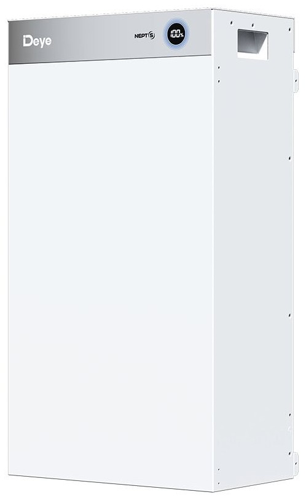
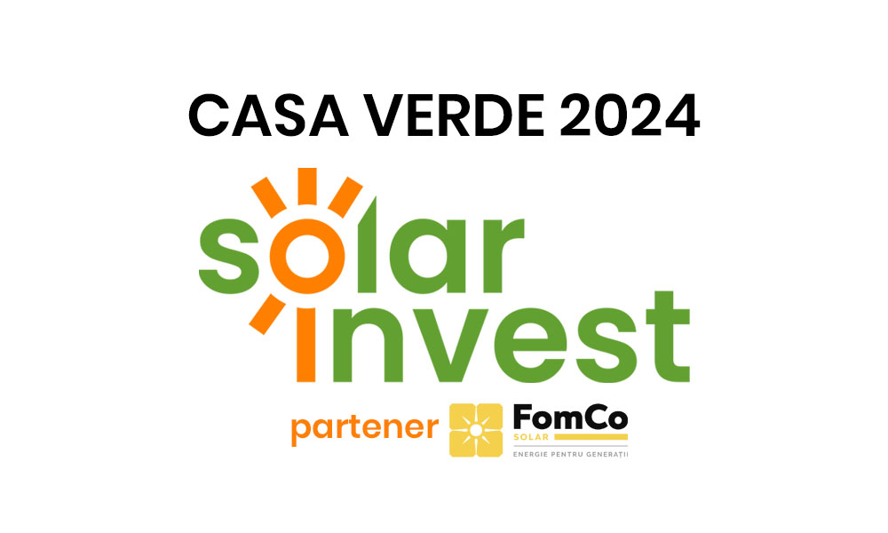
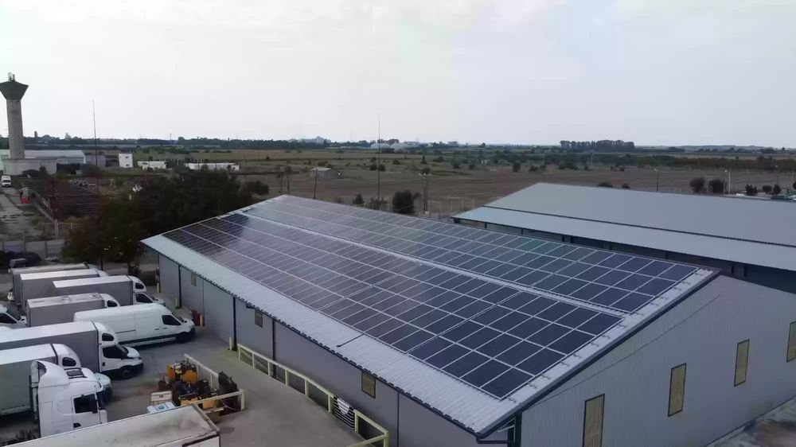
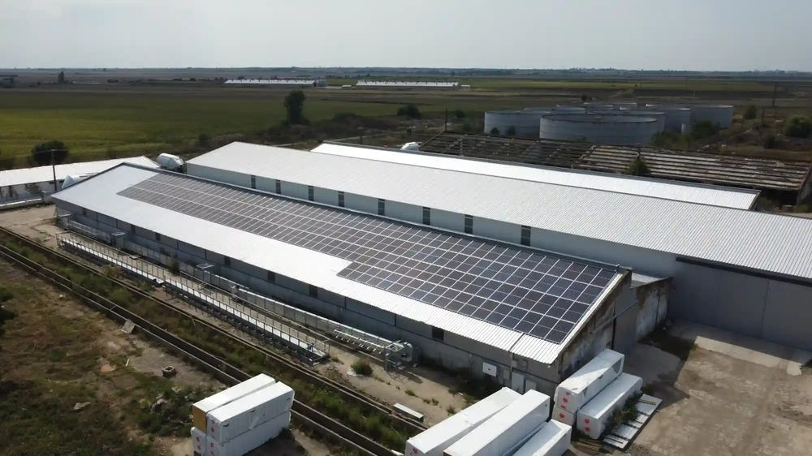

Minim 25% contribuție proprie
Partea din valoarea proiectului acoperită din surse proprii.
Stochează energia solară și folosește-o când ai nevoie. Alege o configurație, apoi contactează-ne pentru verificarea compatibilității, disponibilității și prețului actual.
Până la deschiderea înscrierilor
Înscrierea persoanelor fizice: 20 nov., 10:00 – 25 nov., 23:59
Dacă ai invertor hibrid, alege cea mai potrivită variantă pentru nevoile tale.
| Model | Capacitate | Preț total |
|---|---|---|
| Deye SE-F16 Lite-OIP 21 · interior | 16 kWh | 13.232 lei827 lei/kWh |
| Deye SE-F20 Lite-OIP 21 · interior | 20 kWh | 15.757 lei788 lei/kWh |
| Deye SE-F16 Air-OIP 66 · exterior | 16 kWh | 13.621 lei851 lei/kWh |
| Deye SE-F20 Air-OIP 66 · exterior | 20 kWh | 16.340 lei817 lei/kWh |

16 kWhLFP · modular, podea
Programul AFM finanțează sistemele de stocare cu baterii pentru persoanele fizice care au deja panouri fotovoltaice. Iată ce trebuie să știi înainte să îți calculezi punctajul.
Partea din valoarea proiectului acoperită din surse proprii.
Standardul de cost maxim eligibil, TVA inclus.
Persoane fizice care au calitatea de prosumator.
Conform Ordinului nr. 2.314/2026 (Monitorul Oficial nr. 953 din 16.11.2026). Atenție: punctajul pentru contribuție se calculează din raportul dintre contribuția ta și finanțarea AFM, deci crește și dacă soliciți mai puțin.
La punctaj egal, departajarea se face în această ordine: contribuția proprie, capacitatea sistemului, finanțările publice anterioare pentru stocare și apoi data și ora înscrierii.
Am creat un opis care te ajută să aduni documentele în timp. Poți să îl descarci aici.
Descarcă opisul de documente (PDF)Dacă ai toate documentele pregătite și scanate în format PDF, urmează pașii din videoclipul de mai jos pentru a le încărca pe site-ul AFM.
Poți accesa site-ul la inscrierionline.afm.ro
Informațiile sunt orientative. Condițiile exacte și perioada de înscriere se găsesc în Ghidul de finanțare AFM. Această pagină nu reprezintă o înregistrare, o garanție de eligibilitate sau o promisiune de finanțare. Prețurile și modelele afișate sunt exemple și nu reprezintă o ofertă comercială.
Sursă oficială: calendarul publicat de AFM. Verifică Ghidul de finanțare AFM pentru condițiile finale și documentele necesare.
Programul finanțează până la 15.000 lei, iar unele firme își ajustează prețul la această sumă, ca și cum statul ar plăti oricum diferența. Plafonul este însă doar o limită, nu un preț țintă. Bateriile se vând, în general, sub 1.500 lei/kWh, deci o ofertă apropiată de plafon poate indica o supraevaluare. Cere mai multe oferte și compară:
Cea mai scumpă ofertă nu este automat cea mai bună. Cu cât prețul real este mai mic, cu atât contribuția ta proprie este mai mică și mai ușor de gestionat.
Pentru punctajul maxim, alege minimum 15 kWh și o contribuție proprie cel puțin egală cu finanțarea AFM, adică minimum 50% din valoarea proiectului. Finanțarea poți să o soliciți și sub plafon.
Gândește-te dacă îl înlocuiești. Invertoarele Huawei funcționează doar cu bateriile proprii ale producătorului și sunt foarte scumpe. Cu un invertor hibrid compatibil, instalarea bateriei poate fi mai economică.
Urmărește pagina noastră pentru cele mai recente informații despre program.
Câteva întrebări, câteva cifre și în câteva minute afli unde te situezi în program.
Confirmăm stocul și termenul de livrare în oferta actualizată.
Calculăm ce capacitate și ce contribuție proprie aduc cel mai mare punctaj.
Echipă cu experiență, execuție ordonată, sistem adaptat panourilor tale.

Mulțumim clienților pentru încredere. Ducem această experiență mai departe în programul de baterii din 2026.

200 kW capacitate

110 kW capacitate

104 kW capacitate

68 kW capacitate

16,4 kW capacitate

5,6 kW capacitate
Scrie-ne sau sună-ne pentru o ofertă personalizată; confirmăm compatibilitatea sistemului și disponibilitatea actuală.